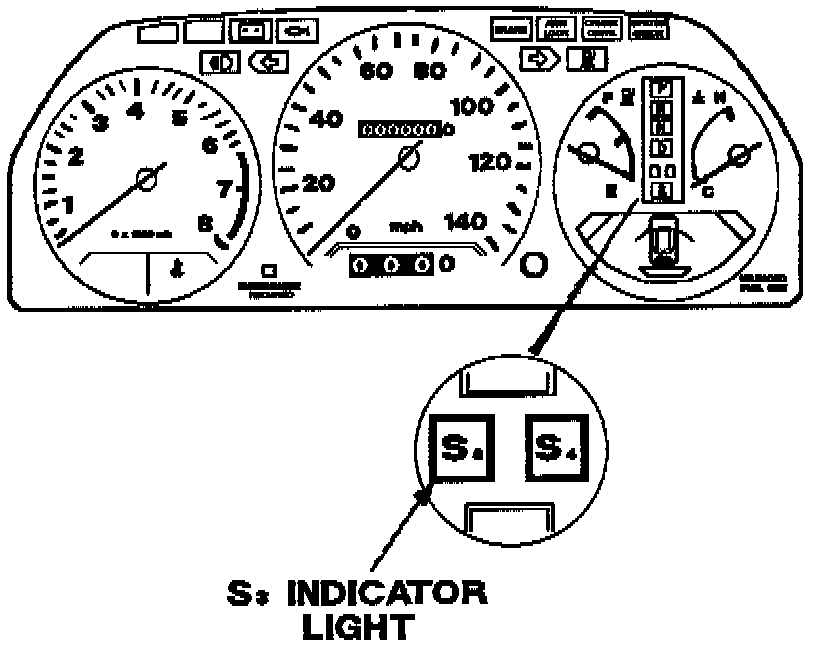
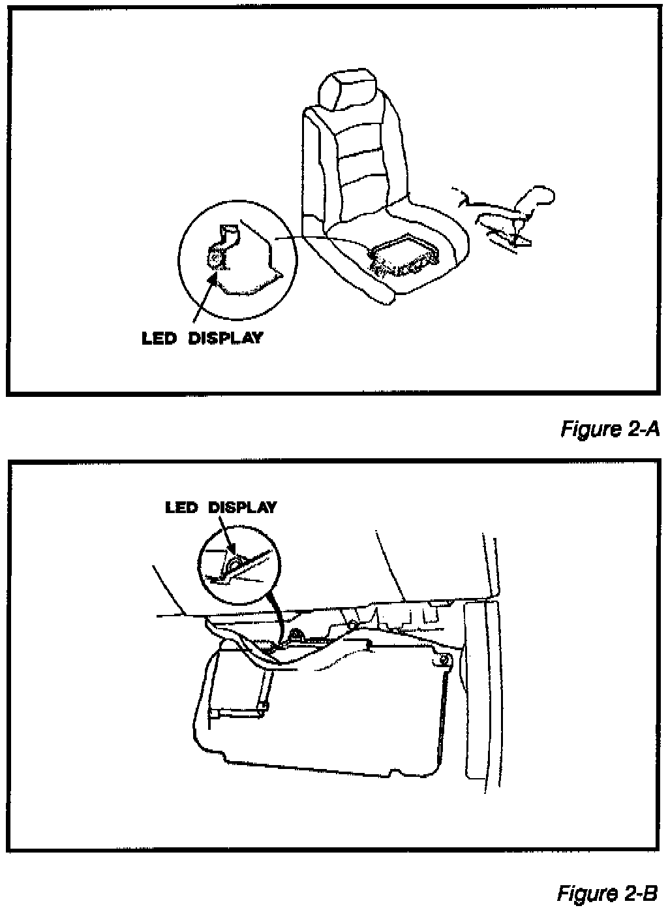
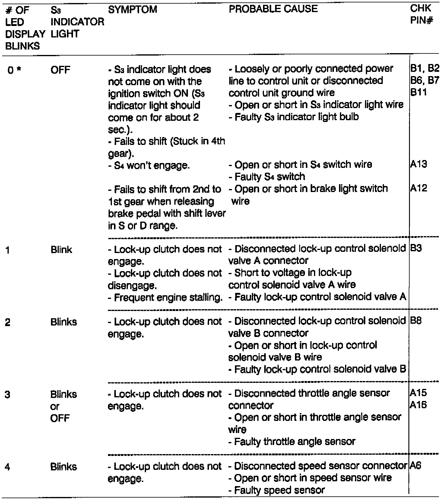
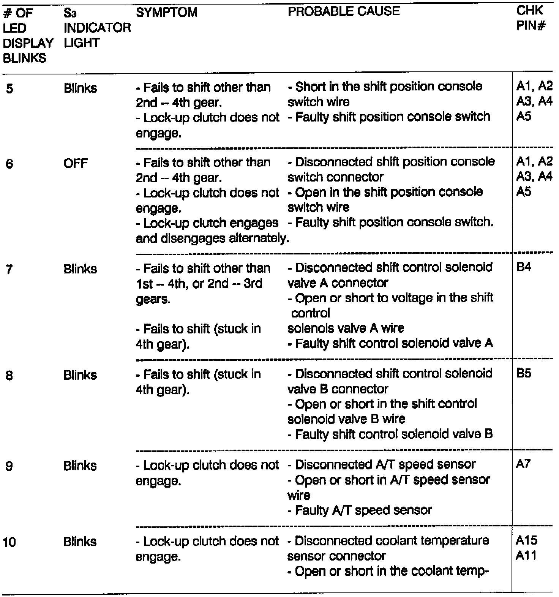
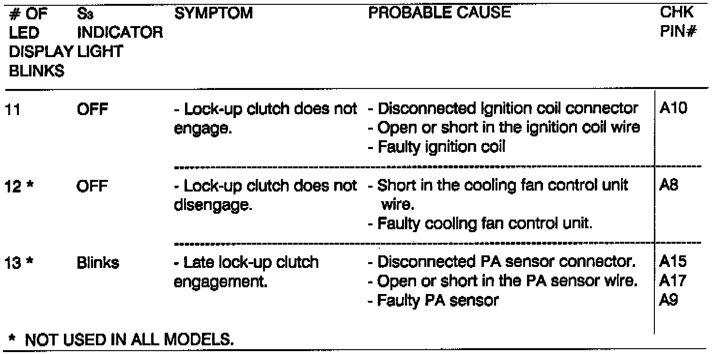
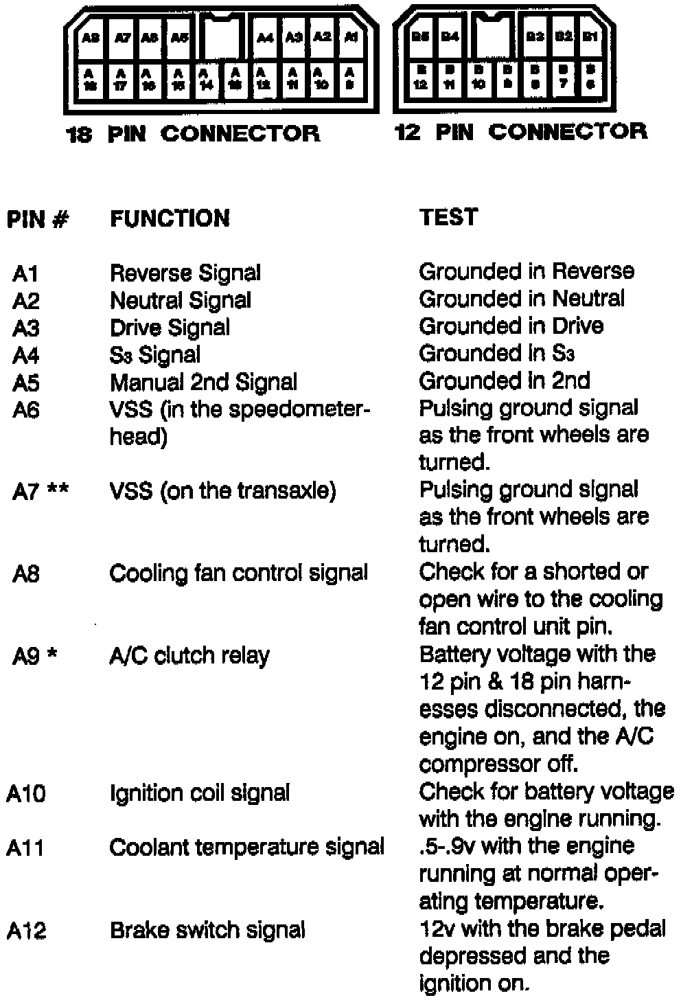
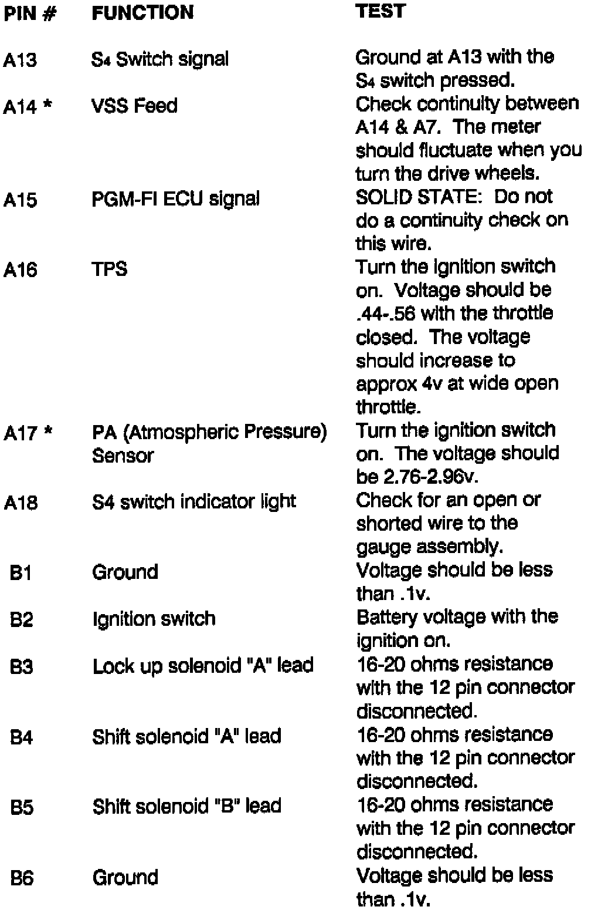
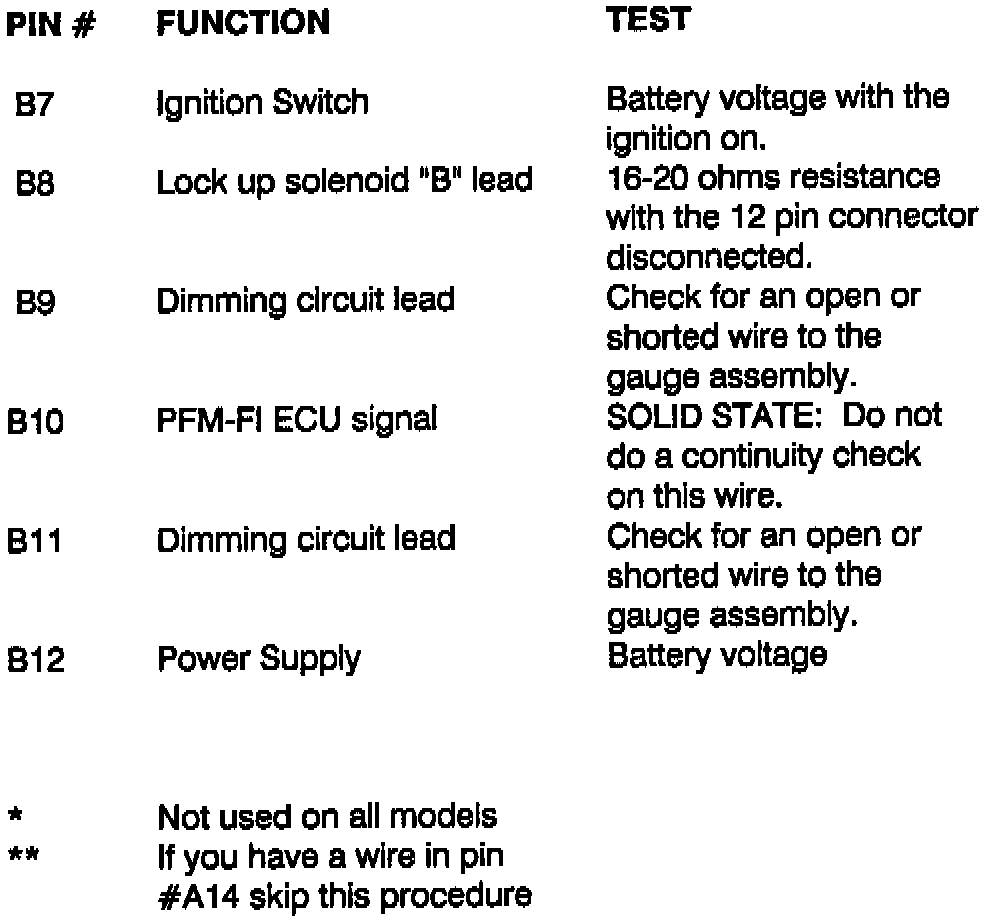

A/T - Computer Diagnostics
BULLETIN: # 068SUBJECT: Computer Diagnosis
APPLICATION: Honda/Acura
DATE: September 1991
TRANSMISSION: Honda/Acura 4 Speed
HONDA/ACURA 4 SPEED COMPUTER DIAGNOSING

Acura has been using computer shifted transmissions since 1987. The computer has a self-test feature that will signal the driver if a malfunction is present. When the computer detects a malfunction it flashes the S3 light on the dash. Figure 1.

If the S3 light is flashing you want to check for trouble codes from an LED built into the computer. If you don't get any trouble codes, check the symptoms in the trouble code charts.
Note
This information is for models using an 18 & 12 pin connector at the computer.

Codes 0 - 4

Codes 5 - 10

Codes 11 - 13
COMPUTER PIN CHECKS

Pins A1 - A12

Pins A13 - B6

Pins B7 - B12
FOR ADDITIONAL INFORMATION
See August 1991 Acura Bulletin # 064